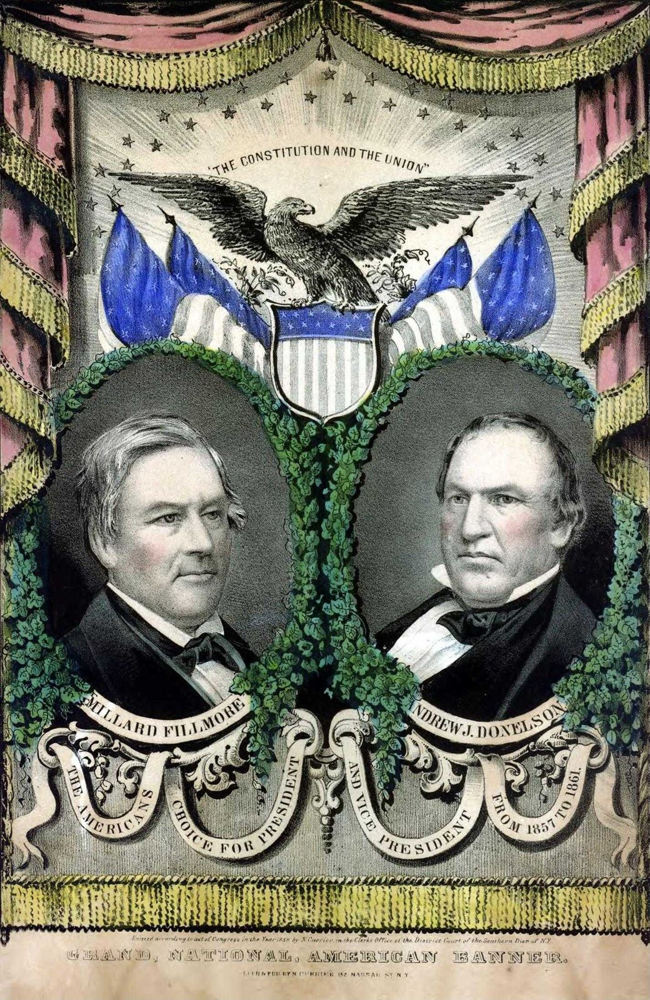

| Field | Detail |
| TOC Fit | Chapter 8 · Essay prompt 8.5 (The Roots of Nativism) |
| Why Here | A Currier campaign print for the American Party ticket of 1856 shows Millard Fillmore and Andrew Jackson Donelson framed by flags under the slogan “The Constitution and the Union,” with no anti-Catholic or anti-immigrant imagery. Students can weigh whether, by 1856, the Know-Nothings were selling themselves less as nativists than as the party that could hold the Union together. |
| Treatment | Public-domain image; printed text to be transcribed from the image |
In February 1856 the American Party’s national convention in Philadelphia nominated former president Millard Fillmore, a New York Whig, for president and Andrew Jackson Donelson of Tennessee, nephew and former private secretary of Andrew Jackson, for vice president. Many northern delegates walked out after the convention refused to oppose the Kansas-Nebraska Act, and much of the party’s northern wing soon moved to the new Republican Party. In September the remnant of the Whig Party also endorsed Fillmore. Fillmore campaigned as a moderate who would calm the sectional quarrel over slavery in the territories, warning that a Republican victory would divide the nation. Nathaniel Currier’s New York firm sold campaign portraits like this one for every major candidate in 1856. Fillmore finished third with about 21 percent of the popular vote, strongest in the border South. Editorial note. The plan found this print through a DPLA exhibition (The Hermitage, via the Digital Library of Tennessee). The DPLA exhibition’s item link no longer resolves; the DPLA record and repository URL below are current. CAUTION: This is campaign advertising; read it as the makers’ argument about what the American Party stood for in 1856, not as a description of the party’s whole program. Text transcribed for this reader from the repository image; illegible words are marked [illegible]. The print's own title line reads “Grand, National, American Banner”; “Fillmore-Donelson National American Ticket” is the repository's title. |
|
 |
|
UNIT 3 · AN EXPANDING NATION | HISTORY B17A | DANIEL GARZA, M.A.
|